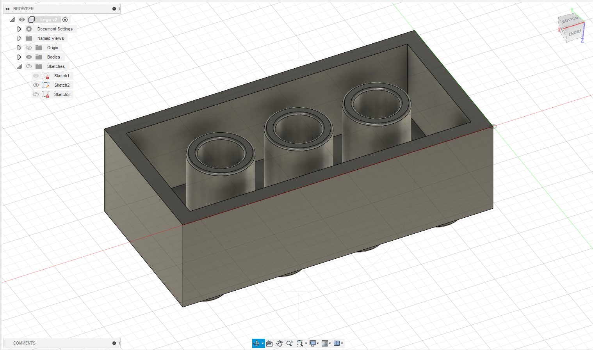

GIMP
I used the free transform tool in GIMP to trace the silhouette of me ,deleted the background of the original picture and inserted a background of a beach.
Inkscape
I opened the image using Inkscape and used the path tool to trace the outlines of the creature.

After tracing, I used the fill tool to fill in the basic colours of the creature.
Name Tag
Sketch
3D Model
After making the sketch (Create > Create Sketch), I used extrude (Create > Extrude) on the silhouette, the base of the name tag and on the text of my name.
Lego
Overhead View
I sketched a rectanglular shape and used extrude to form a cuboid. I then sketched a circle on the surface of the top side of the cuboid, extruded it, used fillet (Modify > Fillet) to round out the edges and then used rectangular pattern (Create > Pattern > Rectangular Pattern) to repeat the modified circle.
Bottom View

I hollowed out the bottom of the cuboid with shell (Modify > Shell), sketched out two circles and extruded them to form a cylinder. After which, I also used the rectangular pattern to repeat the cylinders.
Hexnut
3D Model
Chess Piece - Knight
Sketch
I inserted a reference image found online using canvas (Insert > Canvas) and traced it, only making slight adjustments to the base of the chess piece. After tracing it, I was not satisfied with the size of the chess piece so I scaled (Modify > Scale) the outlines to my liking.
3D Model

I used revolve on the base and extruded the body of the chess piece. I wanted to add more details to the body of the Knight so I made more sketches and used extrude. I extruded the mane of the Knight and cut extruded the gap between the ears of the Knight.